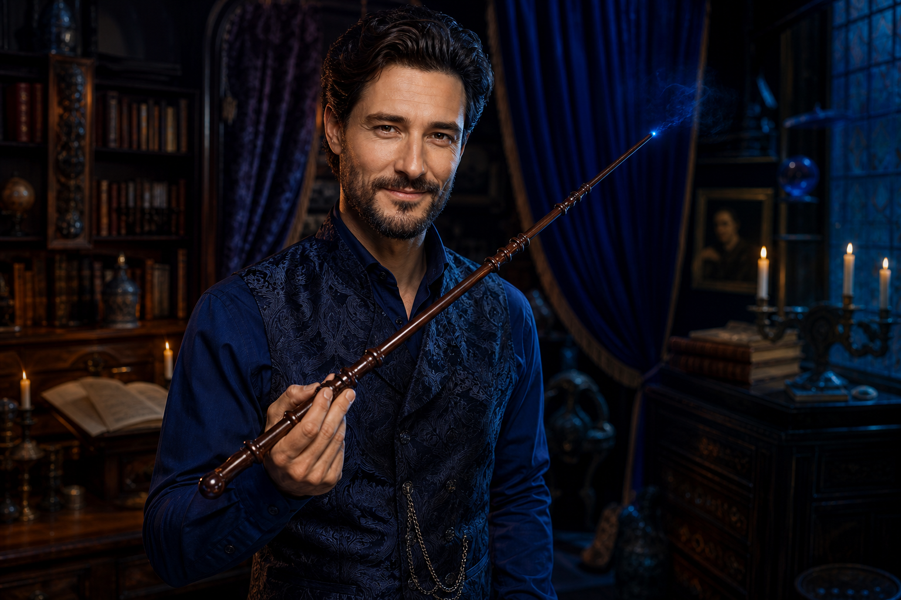
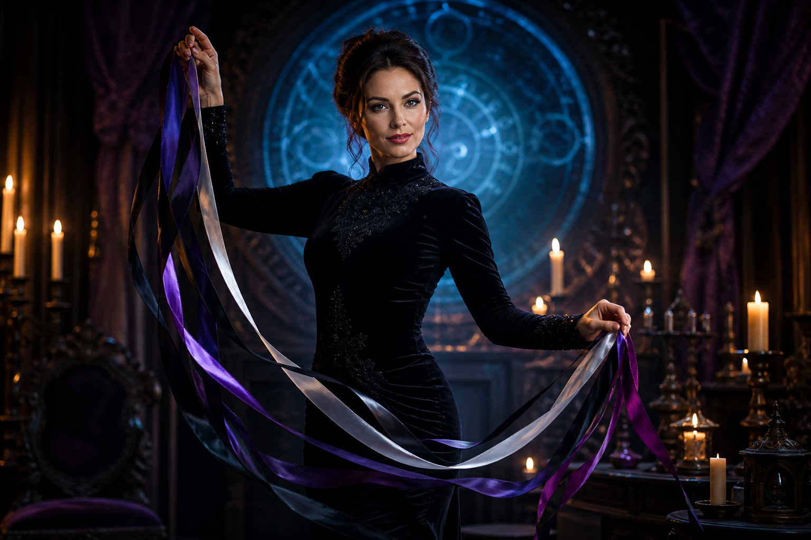

OW
Only Wizzard ✓Heute, 20:15 Uhr
Heute im Salon: Der königliche Spieleabend. Große Züge, kleine Snacks und garantiert keine schlechten Verlierer.* ♜
* vermutlichHEUTE ABENDDER KÖNIGLICHE
SPIELEABEND♜
SPIELEABEND♜
@onlywizzard
Magische Momente, gute Geschichten und gepflegter Unfug. Willkommen in unserem digitalen Salon. ✦
Heute im Salon: Der königliche Spieleabend. Große Züge, kleine Snacks und garantiert keine schlechten Verlierer.* ♜
* vermutlichEin guter Abend ist kein Zufall. Er beginnt mit Neugier, Humor und einem Getränk, das man nicht über die Tastatur schüttet. ☕
„Genug Magie, um besonders zu sein. Genug Bodenhaftung, um die Getränke nicht umzustoßen.“— ONLY WIZZARD
Auf die Größe kommt es an? Heute vergleichen wir Länge, Umfang, Härtegrad und Grifftechnik verschiedener Zauberstäbe. Entscheidend bleibt jedoch: Der richtige Schwung macht die Magie. 🪄

LEKTION 07 · STABKUNDEEine nicht ganz wissenschaftliche Materialkunde.
Die Kunst des magischen Knotens: Welche verzauberten Bänder halten zuverlässig, ohne ihre Träger aus dem Konzept zu bringen? Nur für volljährige Zaubernde – und ausschließlich mit klar vereinbarten Zauberregeln. 🪢

ABENDKURS · EINVERNEHMLICHJeder Bann endet mit einem vereinbarten Lösungswort.
Meister, Lehrling und die hohe Kunst des Gehorsams: Wer gibt den nächsten Zauber vor? Wer darf widersprechen? Eine Lektion über freiwillige Rollen, gespannte Erwartung und das sichere Ende jeder Prüfung. 🔮
Wenn der Zauberstab schlappmacht: Pflege, Politur und magische Ausdauer. Plus: Warum manche Zauber zu früh entladen und wie ruhige Atemtechnik helfen kann.